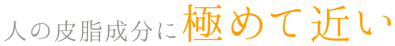

エミューオイルとは
エミュー
エミューは、オーストラリアに生息している走鳥類(飛べない鳥)の一種です。
ダチョウによく似た大型の鳥で、前にしか進めないことから国家成長の象徴として、オーストラリアの国鳥に指定されています。
鋭い爪を持ち、岩の多いオーストラリアの内陸に住んでいますが、野鳥の中でも爪や岩などによる外傷が悪化して死亡するケースが極めて少ないことがわかっています。エミューは、他の動物と比べ、肌の再生力が恐ろしく早いのです。
寒暖の差が激しく、乾燥した砂漠地帯で8000万年もの間生き延びている、生命力の非常に強い古代鳥です。
アボリジニの万能薬
エミューオイルの起源は、オーストラリアで4万年ほど続いていた先住民族アボリジニが利用した時から始まったと考えられています。
エミューオイルは、アボリジニによって傷、やけど、打撲、関節炎、筋肉痛、虫さされなどの炎症鎮痛、皮膚炎などの万能薬として4万年以上も前から利用されていました。
その後、1980年代にオーストラリア政府の支援により、エミューオイルの研究分析・臨床検査が公式に進められ、ＴＧＡ（豪州治療医薬品局）の定める「医薬品」として認められて広く認知されることとなりました。

●脂肪酸組成 比較表：『エミューオイルと人間の皮脂の成分比較表』 及び他オイルとの比較
（参考： 米国 Ｌ.ホプキンス博士/日本油脂検査協会 他）
※飽和脂肪酸･･･
ミリスチン酸、パルミチン酸、ステアリン酸
一過不飽和脂肪酸･･･
パルミトオレイン酸、オレイン酸
多価不飽和脂肪酸・・・リノール酸、リノレン酸
※当グラフは「脂肪酸組成 比較表：『エミューオイルと人間の皮脂の成分比較表』 及び他オイルとの比較」をレーダーグラフ化したものです。
エミューオイルは人の皮脂に近く、親和性が高い
からだに不足している成分を正常な状態に戻すには、その成分を取り入れる(もしくは生成する)必要がありますが、無理なく自然に、優しく成分を取り入れるためには、人体を構成する成分にどれだけ近いかが重要なポイントとなります。
なかでも、「飽和脂肪酸：一価不飽和（オメガ９）：多価不飽和（オメガ３+オメガ６）」の脂肪酸含有バランスは最も注目すべき点であり、エミューオイル(エミュー油)は、他の動物性油や植物性油にはない、極めて人間の皮脂に近いバランスであることが分かります。
また、厚生省指針 栄養所要量(第6次改定)によると、『脂肪酸比率は、飽和：-不飽和(n=9(オメガ９))：多価不飽和(n=6(オメガ６) + n=3(オメガ３)) ＝ 3 ： 4 ： 3が望ましい』とあります。
エミューオイルは脂肪酸比率が約３：４：２と理想に近く、しかも化学調合などによるものではなく全て自然により含有しているものなので、親和性が高く、無理なく自然に不足した成分を補給することができます。
天然オメガ3・6・9の力
皮膚深部への高い浸透力･･･オレイン酸(オメガ９系)
オリーブ油などにも含まれ、皮膚吸収に優れており、有効成分をよりよく浸透させます。また、酸化に強く、劣化しづらい性質を持ちます。
うるおいをキープする高い保湿性･･･リノール酸(オメガ６系)
人や哺乳動物の体内では作られない必須脂肪酸。母乳などにも含まれます。不足すると、髪のパサつきや抜け毛などのほか、傷の治癒の遅れがみられます。食品による過度の摂取はアレルギーやアトピーの原因となりますが、他の脂肪酸とバランスの良く摂ることで健康的に働きます。
抗炎症作用･･･α-リノレン酸(オメガ３系)
EPAやDHAの原料となる必須脂肪酸です。
アレルギー・炎症の仲介物質(ヒスタミン・トロンボキサン・ロイコトリエンなど)の働きを強力に阻害する働きを持つことで有名です。
また、エミューオイルはギトギトした油性残留物を残すことなく、
エモリエント(肌の軟化剤)としての成分を肌の表面から浸透させます。
肌の毛穴の目詰りも防ぐので、ニキビのある方でも大丈夫。
敏感肌・乾燥肌(インナードライ肌)・混合肌、湿疹、かぶれなどの部分にも
やさしくお使いいただけます。
エミューオイルについての研究報告
エミューオイルについて、様々な研究結果が報告されています。
他のオイルには見られない、肌の毛穴の目詰りを防ぎ、ニキビをおこりにくくする →ギトギトした油性残留物を残すことなく、エモリエント(肌の軟化剤)としての成分を肌の表面から浸透させるという、化粧品業界にとって画期的なもの 皮膚のバリアに阻まれて浸透できない水分ベースのオイルに比べ、非常に浸透しやすい (文献：『毛穴予防』：著書 米国テキサス薬学大学 皮膚病理科 皮膚病理
・エミューオイルは試験結果により、C-16からC-1８の脂肪酸の含有バランスにより、顕著な保湿力があることが認められた
・エミューオイルは、水分を保持するための皮膚の表面層を増強し、表皮に浸透し、真皮の厚さを補強するレーテ層を刺激する
→肌のあらゆるトラブルを落ち着かせる。
→アンチエイジングに最適
→爪や毛髪も同様
(文献：『皮膚の保湿成分』：著書 「皮膚学研究と技術」誌編集長 A.ゼムトフ博士)
エミューオイルは自然に２つのものをブレンドすることのできる優れた乳化作用がある
→あらゆるタイプの化粧品のベースとして使用されている
→アスピリンや鎮痛剤などの色々な種類の医薬品と混ぜて使用すると、その有効性を補助することが出来る。
(文献：『乳化剤として』：著書 「皮膚学研究と技術」誌編集長 A.ゼムトフ博士)
生菌検査テストにより、エミューオイルには以下のような生菌類は、存在・増殖しないことが認められている：好気性菌類・カビ類・サルモネラ菌・赤痢菌・ブドウ球菌・連鎖球菌・大腸菌 等
故にエミューオイルの菌の発生を防ぐといえる
→このような優れた特徴を持つため、エミューオイルは保存料や酸化防止剤といった化学薬品の代わりに、自然派化粧品類や食品類などに使用されている：例えば、水素化号植物油や浸透性をよくするために使われるリポソーム化粧品類などに多く利用されている。
(文献：『生菌類検査』：著書 カナダ B.コロンビア州医療技術士・生化学博士K.デイビス博士)
エミューオイルは、室温で安定しており、簡単には酸化せず、２年(現在は３年)以上経っても劣化しない
エミューオイルは、一般的な動物脂質というよりもむしろ植物種子オイルに近い
→人に優しい、自然で安全な保存料として最適である。
(文献：『長期保存機能』：著書 WECP 生産管理課 C.バーク女史)
DNAの合成・毛髪と皮膚の成長促進・毛包の増強において20％以上の改善が見られた
→毛髪の再生力を増進させる臨床結果
●『ＲＩＲＤＣ（オーストラリア政府農業調査発展機構）』研究論文類
『エミューオイル：外傷治療と細胞活性化』
『エミューオイル：その抗炎症性成分』
『エミューオイルの殺菌性と抗ウィルス性』
『新たな動物由来原料の可能性』 等 多数
●『豪ビクトリア大学』共同研究論文
『エミューオイル：腱鞘炎に対する臨床報告』
『エミューオイルのアトピーおよび湿疹への治療効果（継続中）』
●『ＢＪＮ（英国栄養ジャーナル）』論文
『粘膜炎に対するエミューオイルの作用』
『がん予防におけるエミューオイルの有効性』
●その他
『エミューオイル：その医薬成分』：全米エミュー協会
『オレイン酸』：米国オーバーン大学 栄養科学部教授 M.C.シュミット博士
『脂肪酸』 ：オックスフォード薬学大学 M.W.ホワイトハウス薬学博士、米国オーバーン大学 栄養科学部教授 M.C.シュミット博士
『モイストケアにおけるエミューオイルの有効性』： 至学館大学 体育学部 光岡かおり准教授
その他多数


※クリスタル石鹸のみ全国送料500円(税別)、2個以上や他商品とご注文の場合は送料無料です。(泡立てネットを除く)